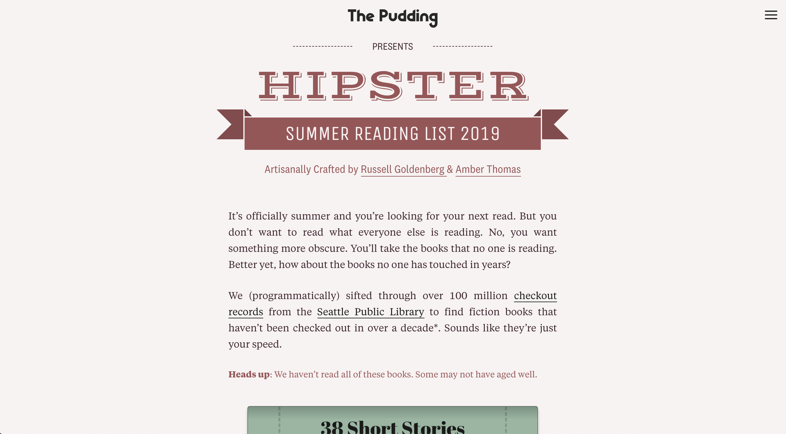
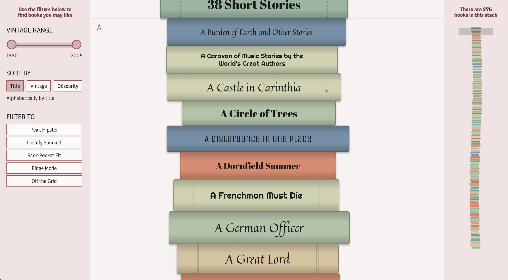
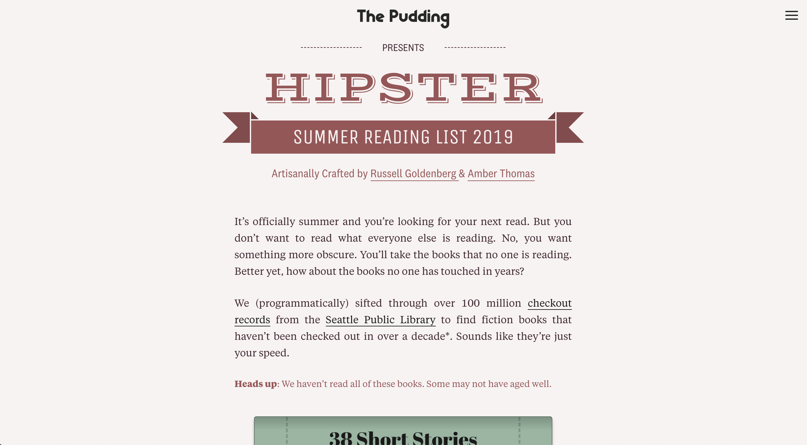
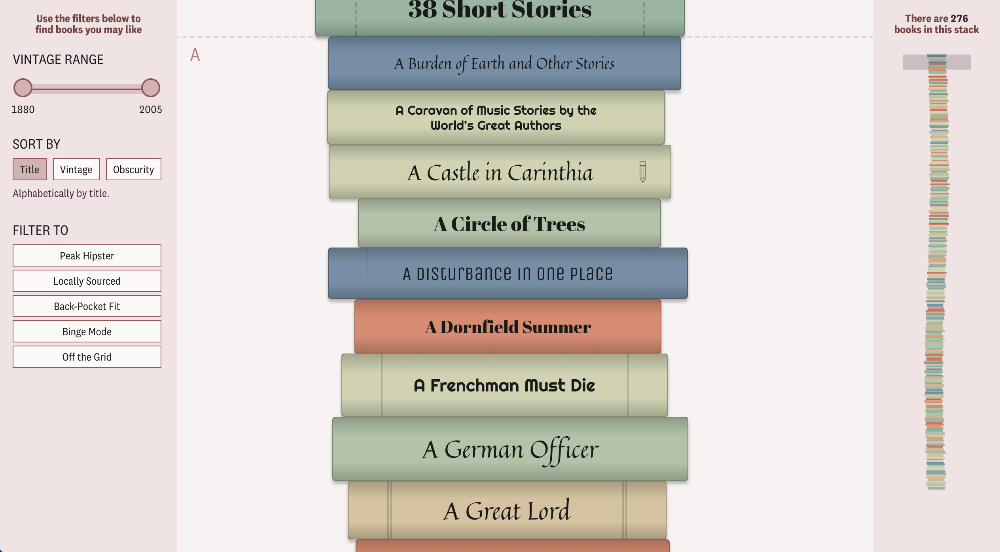

Screenshots


It’s officially summer and you’re looking for your next read. But you don’t want to read what everyone else is reading. No, you want something more obscure. You’ll take the books that no one is reading. Better yet, how about the books no one has touched in years?
We (programmatically) sifted through over 100 million checkout records from the Seattle Public Library to find fiction books that haven’t been checked out in over a decade*. Sounds like they’re just your speed.
This story was in collaboration with The Pudding’s Russell Goldenberg. The idea was originally Russell’s but we worked together on cleaning the data, designing the experience and coding it for the internet.
